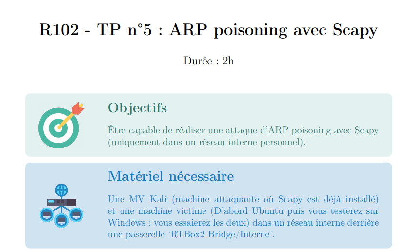
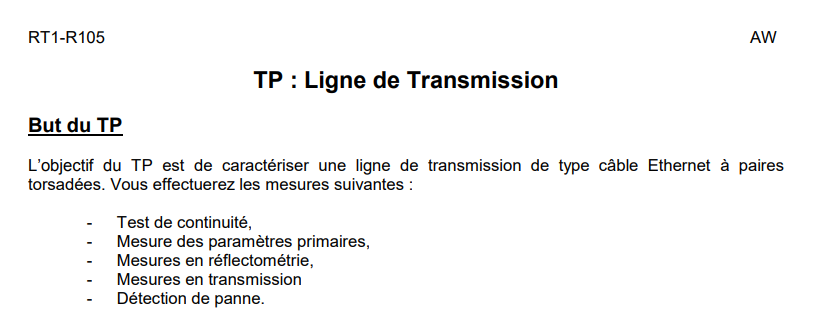
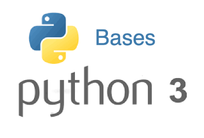

Administrer
Dans la partie Administrer, j'ai travaillé sur l'analyse et la compréhension des échanges réseau au sein d'un même réseau local. J'ai étudié en détail les paquets IP ainsi que les trames Ethernet échangées entre différentes machines afin de mieux comprendre leur structure et leur rôle dans la communication réseau. J'ai également utilisé le logiciel Scapy pour forger manuellement des trames et des paquets, ce qui m'a permis d'observer la manière dont ils sont interprétés et traités par les équipements réseau. Enfin, j'ai mis en œuvre une attaque d'ARP poisoning dans un environnement contrôlé afin de comprendre comment un réseau peut être empoisonné, comment les flux peuvent être interceptés et de quelle manière des données peuvent être volées, tout en mettant en évidence les risques et les failles liés à une mauvaise sécurisation du réseau.

{kind=link}
Connecter
Dans la partie Connecter, j'ai découvert et pris en main le fonctionnement d'un réseau local ainsi que les bases nécessaires à la mise en place d'un système d'information en entreprise. J'ai travaillé sur les concepts fondamentaux des réseaux informatiques et sur le rôle des normes et protocoles essentiels, tels que Ethernet, TCP/IP, DHCP et DNS. J'ai appris à réaliser un adressage IPv4, en étudiant les classes d'adresses, les masques naturels, ainsi que les modes d'adressage statique et dynamique via DHCP. J'ai également abordé les notions de routage, de passerelle et de serveur DNS, indispensables au bon fonctionnement d'un réseau. En parallèle, j'ai étudié les bases des systèmes d'exploitation, leur architecture et leurs différents types (clients, serveurs ). J'ai ensuite mis en place une architecture client-serveur simple au sein d'un réseau local et été initié aux premiers principes de sécurité informatique. Enfin, j'ai travaillé sur la caractérisation des liaisons physiques (RJ45 et câble coaxial) en analysant des paramètres essentiels comme l'atténuation et le retard, à travers des approches théoriques, des mesures et des simulations appliquées à des câbles Ethernet et coaxiaux.

{kind=link}
Programmer
Dans la partie Programmer, j'ai acquis les bases nécessaires à la conception de traitements automatisés de l'information. J'ai travaillé avec le langage Python 3, en manipulant l'affichage et la saisie de données, les variables, les structures de contrôle , ainsi que les principales structures de données. J'ai également appris à réaliser de la lecture et écriture de fichiers en formats texte et JSON. J'ai utilisé Python pour exécuter des commandes systèmes, notamment des commandes réseau comme le ping, afin de mieux comprendre les interactions entre le système et le réseau. En parallèle, j'ai découvert les fondamentaux du Web, avec la création de pages statiques en HTML pour la structure et en CSS pour la mise en forme, en tenant compte de l'encodage des caractères, du responsive design et des bonnes pratiques de conformité. J'ai étudié le fonctionnement du protocole HTTP, le modèle client-serveur, la différence entre le Web et Internet, ainsi que le rôle des URL et des organismes de normalisation. J'ai également appris à utiliser de manière avancée un navigateur pour inspecter le code HTML/CSS et analyser les requêtes Web. Enfin, j'ai pris en main des outils de développement comme Git, les systèmes Linux/Ubuntu, Jupyter Notebook et Visual Studio Code, tout en développant l'usage de l'anglais technique pour la documentation et la compréhension du code.

{kind=link}
Sécuriser
La compétence Sécuriser n'a pas encore été pleinement abordée dans ma formation à ce stade. Toutefois, elle représente un axe essentiel que je serai amené à développer par la suite. À l'avenir, je travaillerai sur les principes fondamentaux de la sécurité informatique, notamment la protection des réseaux et des systèmes contre les attaques, les intrusions et les fuites de données. J'apprendrai à comprendre les menaces courantes, les vulnérabilités des infrastructures réseau ainsi que les mécanismes de défense associés, comme le contrôle des accès, le chiffrement des échanges ou encore la sécurisation des services réseau. Cette compétence me permettra progressivement d'adopter une approche rigoureuse et responsable dans la conception et l'exploitation de systèmes informatiques sécurisés.
Surveiller
La compétence Surveiller n'a pas encore été étudiée en pratique, mais elle constituera une étape importante de mon parcours. À terme, je serai amené à mettre en place des mécanismes de supervision et de surveillance des réseaux et des systèmes, afin d'assurer leur bon fonctionnement et leur disponibilité. J'apprendrai à utiliser des outils de monitoring pour analyser les performances, détecter les anomalies, anticiper les pannes et réagir efficacement aux incidents. Cette compétence me permettra également de comprendre l'importance de la collecte et de l'analyse des données issues des équipements réseau, dans le but d'optimiser les performances et de garantir la continuité de service au sein d'une infrastructure informatique.